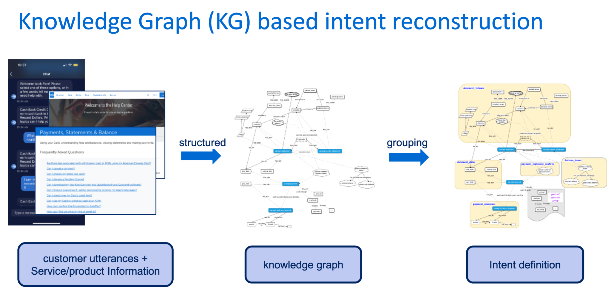
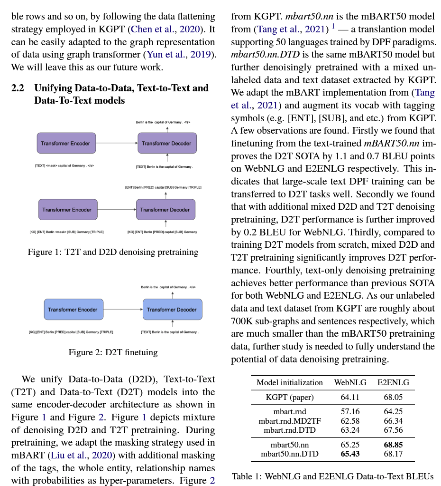

Projects
Knowledge graph based intents reconstruction
Built service knowledge graph (KG). Re-construction of label hierarchy and refining classification logistics. Labels are reselected and redefined by entity and sementic similarity. The knowledge graph based intents improve classification model accuracy from 82.48% to 92.17%. The knowledge graph is also used to ingest fine grain factual knowledge in contextual learning and helps to surpress hallucination in generation.
LLMs augmented Auto-labelling pipeline

This project is to conduct autolabelling in text data for text classification. The pipeline utilizes a diversity filtering algorithm to draw diverse and comprehensive samples from given labelled data. By contextual learning, it leverages LLM to summerize and formalize the definition of each label (or labelling guidelines). With delibrated designed prompts integrated by definitions, the pipeline auto label data samples.
Knowledge graph to text modelling
Converting knowledge graph triples to text (simplied as kg2text) is a classic NLP task. This project re-shaped the task as a tranlsation task and utilizes the language-agnostic representation learned by multilingual language model to conduct this task. The model was extendly pretrained and fine-tuned from a mbart 50 model. This project was finished during internship in Amazon